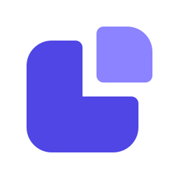

L'idée
Un bloc dont une pièce s'extrait
Ensemble, ils dessinent le L de Lynk. La pièce sortie, c'est le fichier qu'on extrait ; le bloc, c'est l'archive qui range. Une seule forme pour les deux gestes du logiciel.
→

→2 bras égauxde 80 unités
2 intersticesidentiques de 20
Rayons 36 / 10extérieurs / intérieurs